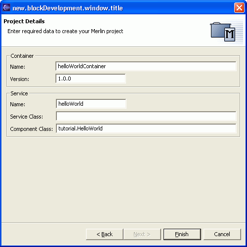

|
|
In this section, you will create a new Merlin project.

Now enter the projects name. This is done exactly the same way, as you do it with normal Java projects.

With the next page you can select the type of project you would like to start with.
Note: You always may change the project contents in any direction you want. The "New project" wizard only helps you getting started as fast as possible. You can also take those project types as examples and getting familiar to certain aspects of the Merlin Container.

With Version 0.0.1 of Merlin Developer, initially three types of Merlin projects are delivered, which are explained in detail later.
Note: Those project types are fully customizable, so that you may create your own in detail projects or adopt them to your enterprise standards. How to customize the project types is described here.
Now to the three "ready to go" project types:

If you press "Finish" the complete Project - aligned with your selected type - will be created for you.
You should see now a new project with the following structure:

Internally allot of things are generated by the wizard for you. If you want to know more of the internal, please go to the Reference section.